Click::RAND\#2. An Indeterminate Sound Sculpture
Abstract
Can random digit data be transformed and utilized as a sound installation that provides a referential connection between a book and the electromechanical computer? What happens when the text of A Million Random Digits with 100,000 Normal Deviates is ‘vocalized’ by an electro-mechanical object? Using a media archaeological research approach, Click::RAND#2, an indeterminate sound sculpture utilising relays as sound objects, is an audio-visual reinterpretation and representation of an historical relationship between a book of random digits and the electromechanical relay. Developed by the first author, Click::RAND#2 is the physical re-presentation of random digit data sets as compositional elements to complement the physical presence of the work through spatialized sound patterns framed within the context of Henri Lefebvre’s rhythmanalysis and experienced as synchronous, syncopated or discordant rhythms.
Author Keywords
media archaeology, sound installation, electro-mechanical, rhythmanalysis, indeterminacy
CCS Concepts
•Applied computing~Arts and humanities~Media arts •Applied computing~Arts and humanities~Sound and music computing •Hardware~Communication hardware, interfaces and storage~Electro-mechanical devices
Introduction
Expressing his scepticism of quantum theory, that nature is inherently probabilistic, Einstein stated, “God doesn’t play dice with the world.” [1] Someone did not tell our ancestors. Some believed an outcome determined by the use of randomizers, including the roll of the dice, the casting of coins, the drawing of straws or lots or other aleatoric methods, to be an expression of God’s will. [2] [3] Uncomfortable with the idea of randomness and the belief that things happen for a reason, early sentiments were that these events were God’s way to explain the unexpected. [1]
Randomness, an inherent part of the world we live in, is a phenomenon we strive to understand and control. As such, a number of equivalent definitions have been proposed that contextualize randomness relative to prior notions. These include, but are not limited to, definitions in mathematics, statistics, philosophy, physics and based on social phenomena. Sebastiaan Terwijn encapsulates the milieu of definitions in stating,
A random object is defined as an object that is random with respect to a given type of definition, or class of sets. As the class may vary, this yields a scale of notions of randomness, which may be adapted to the specific context in which the notion is to be applied. [4]
The objective of this paper is not to argue an exact definition for, or to provide a history of, randomness or methods of random sequence generation. Rather the objective is to apply Terwijn’s notions of randomness to the specific context of sound-based art.
This paper presents an object-based sound installation that, through a material media archaeological approach, explores the possibility of “embodying the notation of presence and absence” as a method to expose the patterns of state transitions of binary sequences as a series of rhythmic forms. [5] Titled Click::RAND#2, the work is an electromechanical sound-sculpture that transforms RAND Corporations book of random numbers into an audiovisual series of compositional patterns. The project presented in this paper is a reconceptualization and redevelopment of the first author’s work presented at NIME 2020. [6] As such, Click::RAND#2 has evolved into a multi-dimensional and adaptable work that explores both the inherent rhythmic patterns in the data and the acoustic nuances of the space it inhabits.
The next section presents a brief overview of the two main artefacts utilized in Click::RAND#2. The paper then introduces media archaeology as a way of engaging with the sound object that has been used in the ideation and creation of the work. After a brief repertoire review in the use of chance in the arts, the paper introduces Click::RAND#2 as an object-based sound installation. The paper ends with a discussion of the work and concluding remarks.
Overview of Media Artefacts
The ideation and creation of Click::RAND#2 has been informed by developments in, and a relationship between, the mechanical production and publication of large random number sets and electromechanical relay-based computers. This section briefly describes these artefacts.
Electromechanical Computing Takes Command.
Electromechanical calculating machines were developed in the mid-20th century to meet the growing need to perform more complex scientific and engineering calculations. These early machines consisted partly of reconfigurable systems of relays. The advantages of these new calculating machines were twofold. First was the ability to perform more complex calculations than merely addition and subtraction. Second was the ability to flexibly reconfigure a circuit according to what one wanted the circuit to do i.e. to perform arithmetic, control functions or number storage. [7] The development of an abstract notation (AND, OR, NAND, NOR, etc.1) to express the logical relationships of decimal numbers in binary format was developed to facilitate arithmetic and control functions for these early machines. [8] For the relays performing this arithmetic it was a matter of activating or deactivating the relay as a series of off (0) or on (1) sequences. However, these new machines were not without their problems. These included their performance which limited the complexity and quantity of computations that could be undertaken and the relays’ intermittent failure resulting in incorrect calculations that may have gone unnoticed. [7] [9] It is within these constraints that other non-computational methods of random number generation continued to be used to provide large data sets for use in calculations and modelling studies.
Large Random Number Sets in the Age of Mechanical Production
Even before the use of electromechanical and electronic devices to perform more complex scientific and engineering calculations, demand existed for large and high quality true random number sets. The construction and publication of large tables of random sampling numbers was driven by their need in probabilistic experiments where the one-time generation of sufficient numbers in each case was considered slow, laborious and not without bias.
A variety of applications for probabilistic modelling studies increased demand for larger, truly random number sets that would not be questioned as to whether they were good enough to be used or to overcome the reuse of data sets in a model. [10] Motivated by this need in its own experimental research, RAND Corporation constructed an electronic mechanism to generate random numbers and punch them onto cards. [9] The work, completed in 1947, consisted of 20,000 punch cards with 50 numbers on each. RAND Corporation published the work as a book in 1955. Named A Million Random Digits and 100,000 Normal Deviates, (see Figure 1) the volume consisted of two large tables that contained 1,000,000 random digits and 100,000 Gaussian deviates.

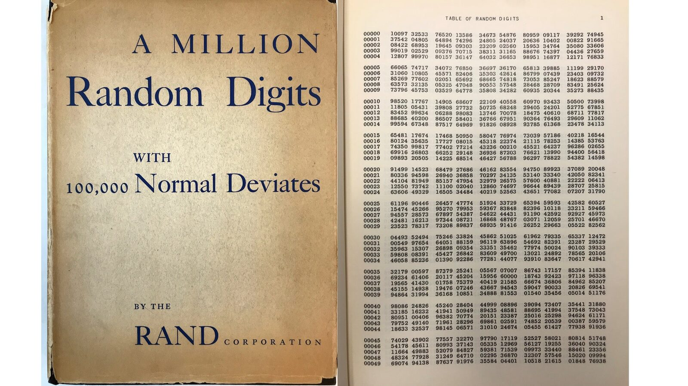
Figure 1. Cover and first page from original 1955 printing, RAND Corporation, 1955
(Images courtesy of RAND Corporation Archives)
This book is the stimulus for the ideation of a indeterminate sound installation. The random number and normal deviation data sets are now publicly available from RAND Corporation’s website2. Could this data be transformed and utilized as an object-based sound installation that provides a referential connection between the book and the electromechanical computer? This question is the basis of this paper which concerns the use of randomness as an artistic construct.
Click::RAND#2 as Creative Media Archaeology
Media archaeology, as an approach to the critique of contemporary media culture and history, is considered to formulate counter histories to the dominant narratives of technology and media. One approach to undertaking media archaeology research excavates the agency of the machine, a shift from understanding media history through discourse alone, to consider it through the use and remediation of a material artefact. [11] Drawing on an operative media archaeology of a close reading and hearing of sound, Click::RAND#2’s aurality is based on a close listening to the sonic artifacts of a single relay. As such, the work explores the media archaeological relationship between two artefactual forms of media, electromechanical computers via the relay and the RAND Corporation’s book of random digits to create an indeterminate sound installation.
Wolfgang Ernst argues that apparatus only reveal their essence through a process of technological execution; an operative engagement with an artefact that can reveal a sonic heritage. As a method for analysing the dynamic nature of media technologies, Ernst examines the relationships between rhythmics, sound and the wider sonic sphere. However, Ernst suggests an interlaced approach to the analysis and interpretation of these sonic worlds as a refrain from an immediate cultural contextualization without being reduced to mere physical acoustics. [12][13]
One method of rhythmic analysis that incorporates subjects that do not produce any obvious sound in the listening experience is Henri Lefebvre’s rhythmanalysis. He states “everywhere where there is interaction between a place, a time and an expenditure of energy, there is rhythm.” [14] Lefebvre’s rhythmanalysis is comprised of a variety of rhythms that coexist and clash, categorized as eurhythmia, polyrhythmia and arrhythmia. Eurhythmia is considered to be the smooth combination of rhythms in equilibrium. Polyrhythmia is composed of diverse rhythms that, at times, interact to maintain a symbiosis but at times clash as relational forces of contradictions and resistance to maintain a harmonious relationship. Arrhythmia is the state of discordant rhythms, rhythms that break apart in a divergence of time and space. [15] However, Click::RAND#2’s expressive forms are not solely framed by Lefebvre’s concepts of the rhythmic patterns inherent in the “experience and knowledge of the body”. [14] Its transverse rhythms, as layers that may compete against or complement each other, weave complex forms among times, spaces, and energies that move between the human and non-human. At the modal intersection of Ernst’s machine time and a lived acoustic time, are differences that Lefebvre describes in musical terms as measure and beat (linear time) and melody and harmony ( cyclic time). In this sense, Lefebvre’s combination of linear and cyclic time, as a way of producing differences out of repetition, is used in Click::RAND#2 to discover new opportunities for creating rhythm. [16]
Related Works
Even before Marcel Duchamp used chance methods “as a way of going against logical reality” randomness, as a creative ideal, had a centuries long history in literature and the arts. [17] The use of stochastic methods of composing or performing music also has a long history. Some of the descriptions for these techniques include, but are not limited to, aleatoric, indeterminate or chance music. Precedents for the use of these forms include John Cage’s use of indeterminacy across a range of works including Music of Changes (1951), a work based on his study of the I Ching. In pushing the limit of indeterminacy, Cage’s goal for the works was to abandon all sense of control by the composer or performer. For 4’33” the performance was left to the unpredictability of environmental sounds. Pierre Boulez’s experimentation with ‘controlled chance’ in works such as Troisième Sonate- Format III: Constellation-miroir (1957) and Improvisations sur Mallarme (1957) differed from the indeterminacy of Cage by only allowing a choice of possibilities for the performer. Described as a loading of the dice, Boulez’s saw that the unstructured, imprecise use of chance could “conceal a fundamental weakness in compositional technique” and instead, sort to use controlled chance and risk within a strict structure, with limited outcomes. [18][19] Randomness also played a role in the artistic practice of Iannis Xenakis, providing new ways of composing through the use of probability distributions and stochastic techniques. He saw the use of probability functions in music as a technique for creating and articulating sound inspired by natural events and saw it as an opportunity to incorporate scientific concepts into modern music. [20] Examples include Pithoprakta (1954) and GENDY3 (1991) along with his development of computer systems such as the ST Program (1962) to generate indeterminate compositions and multi-media works (for example, Polytope de Cluny, 1972). Such an approach to the use of randomness as generative algorithms plays a key role in contemporary electronic and experimental music.
The use of an indeterminate approach in electromechanical sound art allows an artist to explore the agency and action of materials and objects in their works. Jon Pigott describes this as a process-driven sensibility that exhibits unpredictable sounding, non-linear and unpredictable material behaviours. He argues that, as a creative method, the use of the indeterminacy in electromechanical sound art adds to a sense that the artist has relinquished an element of control in the creative outcome. By letting the natural unfolding of events play a part in the creative process, “the work is free to voice the unexpected behaviours of the electromechanical.” [21] As such, the work is indeterminate with respect to its performance, differing from the use of chance operations as a form of “random procedure in the act of composition.” [22][23] Examples of the use of unpredictability in the resultant sound work include Stephen Cornford’s Migration (2014). This installation piece uses a number of obsolete dictaphones whose ensuant sound is left to the small rhythmic variations of each device’s mechanism. Darsha Hewitt’s Electrostatic Bell Choir (2012-2013) utilizes the static electricity emitted from discarded cathode ray tube television monitors tuned to various channels of white noise. The static from the TVs agitates hanging pith balls that lightly strike sets of bells. A number of Sergey Filatov’s sound sculptures introduce elements of randomness generated through algorithmic processes. Examples include Long Wave: 150-400 (2018) and Random Tala (2017). Zimoun’s immersive sound installations include the use of everyday objects and materials along with mechanical elements such as d.c. motors. He describes his works as generating or evolving by elements of chance not “to discover unexpected results, but to elevate the works to a higher level of vitality.” [24]
The next section introduces and discusses Click::RAND#2, an indeterminate sound sculpture. As such, the work is indeterminate with respect to its performance. [25] Click::RAND#2 foregrounds the relay as the sound-producing object and uses the sonic by-products of a series of relays to create a sound installation as an audio-visual representation of distinctly different, but related, forms of media.
Click::RAND#2
Click::RAND#2 reinterprets an historical relationship between a book of random digits and the electromechanical relay. These artefacts are used as the input and output media of the work. This re-presentation of Click::RAND (the earlier work) arises from the need to expand the physical presence and sonic affordances of the sound sculpture and equip its output with spatial expressivity. The representation of random digit data expressed in the earlier work by a row of relays was ambiguous and made limited use of what is a rich and extensive data set.
Click::RAND#2 uses the random digit data as an input source and the relay as a output sound object to explore the inherent rhythms that exist in the random digit sets re-presented as binary sequences. As a set of self-contained ‘sound blocks’, Click::RAND#2 can be adapted to many physical spaces as a way of incorporating different acoustic properties into the installation.. An illustration of one sound block is shown in Figure 2.

Figure 2. Click::RAND#2 sound block
System Overview
Click::RAND#2 expands the presence of a single relay as an aesthetic element by utilizing 20 relays configured in a 4x5 grid on a single printed circuit board (PCB). This is shown in Figure 3. The physical structure of Click::RAND#2 is provided by the PCB. Each row of four relays is used to represent binary-coded decimal digits 0 to 9 (i.e., 0000 to 1001). Converting the decimal character to its binary equivalent, the sound block represents each random digit in its respective row within a block of digits in the book’s text. An LED embedded in each relay provides a visual indication of a sound’s source. Two switches are used to select the board’s compositional mode.

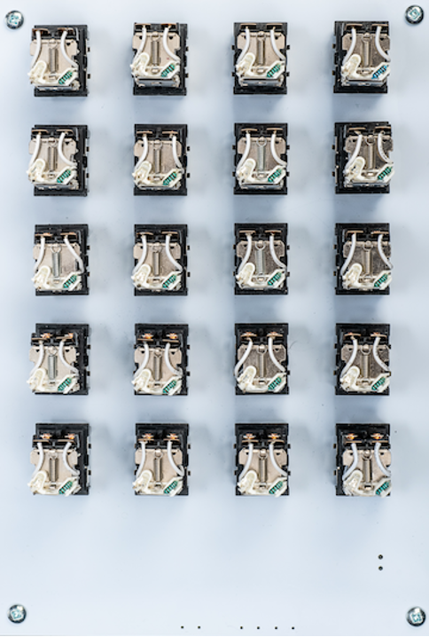
Figure 3. Click::RAND#2 grid layout
All electronic componentry is contained on the single PCB. These components include the driver circuitry to actuate the relays, a Teensy 3.5 microcontroller and voltage regulation. A system overview is shown in Figure 4.

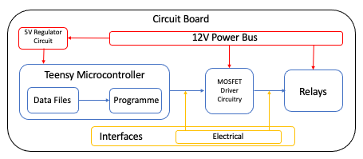
Figure 4 Click::RAND system overview
The Teensy microcontroller programmatically controls each relay through MOSFET driver circuitry. The Teensy hosts a software programme (sketch) developed as a part of the work. This sketch is used to control the work and the random digit and normal deviate text files. These files are contained on an onboard memory card. A digit is randomly selected from the digit file then translated into its binary equivalent which is split into its individual symbols (0s, 1s). These are sent as high or low pulses by the Teensy to the input gate of the associated MOSFET which, in turn, engages the relay.
The physical structure of Click::RAND’s sound block is provided by the printed circuit board. All electronic components are mounted on the reverse side of the circuit board using surface mount components. The reverse side of the circuit board with componentry is shown in Figure 5.

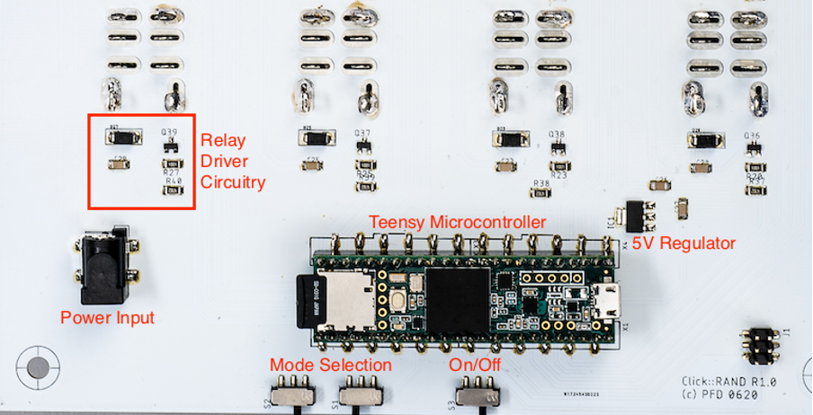
Figure 5. Example of Click::RAND#2’s componentry
Signal Chain
With reference to Figure 6 below, the random digit and normal deviates data files are opened for reading (1). Usong this method, each file remains open for reading and memory use is minimised. The Teensy reads the status of the mode switches to determine the software function to run (2). Three modes are currently available. These modes are elaborated the Compositional Strategies section. Within the selected function, a digit is selected at random from the necessary file. Modes 00 and 10 use the digits file while mode 01 uses both the digits and deviates files with the deviate number used as a tempo element within the work (3a, 3b). The selected digit is converted from a decimal character to a binary string (4). This string is split into individual ‘bits’ and used to actuate the corresponding relays in a row (5).

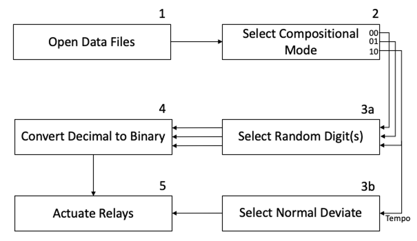
Figure 6. Click::RAND#2 signal chain
Aesthetic Approach
Click::RAND#2 is based on the sonic artefacts of a single relay. By reducing the relay to a basic sounding object, its individual sonic materiality can be heard as a click when the relay’s contacts engage and disengage. The use of a single relay provides a limited sound palette and constrains the compositional outcome of deploying this palette. The single relay is extended to 20 relays on a single PCB to foreground the relays’ sonic nuances through repetition of their sound and to expand the visual and sonic elements of the work. The use of a white circuit board is an abstract reference to the page in A Million Random Digits with 100,000 Normal Deviates. This is shown in Figure 7.

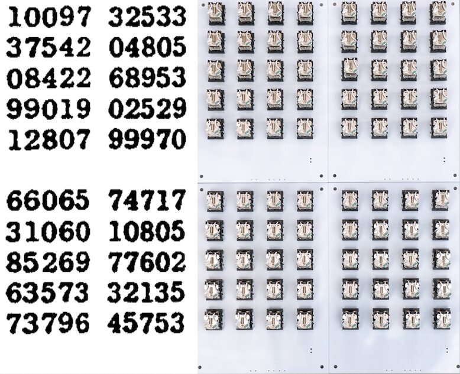
Figure 7. Click::RAND#2. Physical abstraction of the book's layout
Compositional Strategies
This section describes Click::RAND#2’s various compositional forms as expressive rhythmic patterns. Following a brief introduction detailing how temporal and structural logic has been used as a form of meter for digit replay, Henri Lefebvre’s rhythmanalysis is introduced as a way to contextualize and describe the various compositional forms used in Click::RAND#2. This is followed by descriptions of each of Lefebvre’s rhythmic forms used as compositions.
Rhythmanalysis as Context and Concept
Lefebvre’s concept of rhythm is based on repetition, with a continual interference of cyclic and linear time. Each rhythm’s reprise or return, as difference, introduces something new and unforeseen. [14] Modelled on an abstract quantitative time, Click::RAND#2’s meter is the measure of time to transmit each binary coded decimal sequence. Noting Lefebvre’s measure as consisting of both quantitative aspects, that of marking time and moments, and qualitative aspects that link them together, Click::RAND#2 weaves together binary sequences as quantified moments. Drawing on Ernst’s media archaeological approach as a method of engagement with the materiality of the artefact and making audible the medium of print and Lefebvre’s rhythmanalysis as an approach for each composition, three expressive forms of message replay are conceived. These three forms are characterized as eurhythmia (rhythms of equality), polyrhythmia (rhythms of diversity), and arrhythmia (rhythms of disturbance). Each of Click::RAND#2’s compositions are titled after these characterizations. Eurhythmia shows the smoother rhythmic but machine-like patterns of interwoven binary sequences across multiple rows of relays. Polyrhythmia introduces the element of space into the compositional form, both physically by the placement of sound blocks and into the work as the presence and absence of sound. Arrhythmia’s tempo disturbs the work’s spatio-temporal element through the presence and absence of sound as asynchronous binary sequences. Examples of these expressive forms are in the video documentation are available in the footnote.3
Eurhythmia
Eurhythmia, as a state of rhythmic resonance, is a state characterized by the synchronization of different rhythms into a cohesive whole. It involves a form of rhythmic coordination as a distinct way to express how the experience of space and time may interact. [14]
Stanley Blue, quoted in Lyon, argues that eurhythmia contains elements of arrhythmia in the form of irregular “pauses, breaks and off-beats.” [26] Eurhythmia is a composition for one sound block. The composition is a linear ‘reading’ of the book from the first to the last digit (1-1,000,000). Rather than read each digit individually, the book is read sequentially in rows of five. Therefore, each row of relays re-presents a binary coded decimal digit simultaneously. In this form, the binary sequences sway between moments of synchronized and syncopated rhythms that are briefly disrupted by moments of disturbance. These arrhythmic disturbances are the result of a eurhythmia signified by an absence of sound -eurhythmic as synchronized patterns of 0s, arrhythmic as a perceived break in the rhythm. Heard as an irregular pause or off-beat, the arrhythmic moment is the result of the synchronization of two consecutive 0s in the binary sequences occurring simultaneously across all five rows. An example of this pattern is show in Figure 8 with the arrhythmic pause highlighted. Compositionally, these minor ruptures are audiovisual representations of Lefebvre’s description of eurhythmia where the discordant rhythm clashes before coordinating once again. Eurhythmia’s concentration of sound and the sustained playing of binary sequences creates machine-like rhythms that evoke a connection to the rhythmic clattering of early electromechanical computers. The linearity of quantized time is evident in the regular tempo used in this compositional form. As a reading of the book, Eurhythmia is a long form composition lasting approximately 46 hours. Once the digits are read, the work is silent.

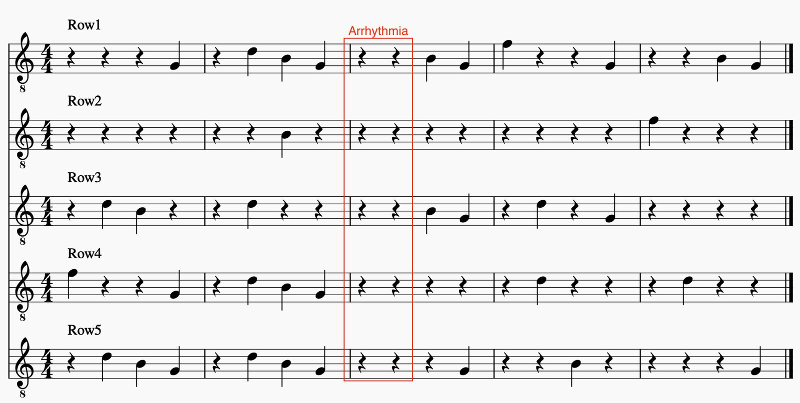
Figure 8. Notated example of arrhythmia in Eurhythmia
Polyrhythmia
Michel Alhadeff-Jones considers Lefebvre’s polyrhythmia to be an environment where heterogeneous rhythms co-exist simultaneously without coordinating with each other. [27] In the absence of synchronization, one has to focus on each of them separately, and eventually successively, in order to grasp their specific rhythms.
Polyrhythmia is a composition for multiple sound blocks. This use allows varying spatial installations. Partly dependent on the installation location, the work’s physical layout can be installed as lines of sound blocks or as a grid. The number of boards can be varied with up to 16 sound blocks being used in a single installation. This may consist of single or multiple sound blocks installed on multiple walls or a varying number of sound blocks installed on a single wall. This compositional form makes use of both a location’s physical space and the presence and absence of sound inherent in the spatio-temporal nature of binary sequences. The patterns, listened to as spatially displaced rhythms, allow a listener’s focus to shift between two levels. At a macro-level, the interweaving patterns represent the totality of the work. At a micro-level, the individual sounds and sequential moments of each binary pattern draws a listener’s attention to the individual sounds.
Polyrhythmia selects a random single digit and plays the binary encoded sequence on the grid row it is found in the book. A notated example of this compositional form is shown in Figure 9. Each stave represents a sound block with each line representing a line of relays.

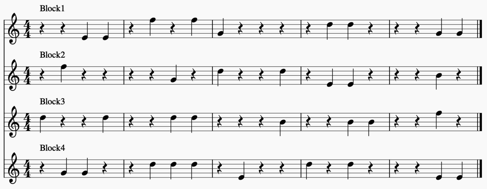
Figure 9. Notated example of Polyrhythmia.
Arrhythmia
Arrhythmia is characterized by the provisional or permanent lack of synchronization between rhythms. [27] It can, subjectively, be perceived as a lack of harmony expressed as a form of dissonance. Dawn Lyon notes that a rhythmanalyst is interested in this discordant form for “its potential to generate creative differences”. [26]
Like Polyrhythmia, Arrhythmia is a composition for multiple sound blocks. A random single digit is selected, binary encoded and played on the grid row found in the book. However, any great variations in the timing of a digital signal (as a binary coded decimal digit) will introduce a discordance between the rhythms as a form of arrhythmia.
Arrhythmia, as a form of pattern disruption, uses the Gaussian deviate table as the compositional form’s temporal element. Instead of each interval conforming to a single time unit, as it would if it were based on the fixed clock time of a digital signaling process as it is manifest in Eurhythmia and Polyrhythmia, Arrhythmia disrupts the rhythmic linearity by randomly changing the timing within each binary sequence. In this way, the sequences lose any semantic meaning as the temporal logic is disrupted. Lefebvre notes in listening to the city that “noise, chaotic, has no rhythm” and that the attentive ear begins to separate out, to distinguish the sources, to bring them back together to perceive interactions.” [14] The use of a disruptive temporal element as a form of chaos allows an audience to engage with the work on two levels. At a macro-level, the random processes of digit selection and temporal representation appear without rhythm as fleeting moments sound or long silences of anticipation. At the micro-level, the listener’s attention focuses the individual sounds of the relays before returning to the macro-level to hear the emergence and ebb of possible moments of rhythm. A notated example of an arrhythmic pattern for one sound block is shown in Figure 10.

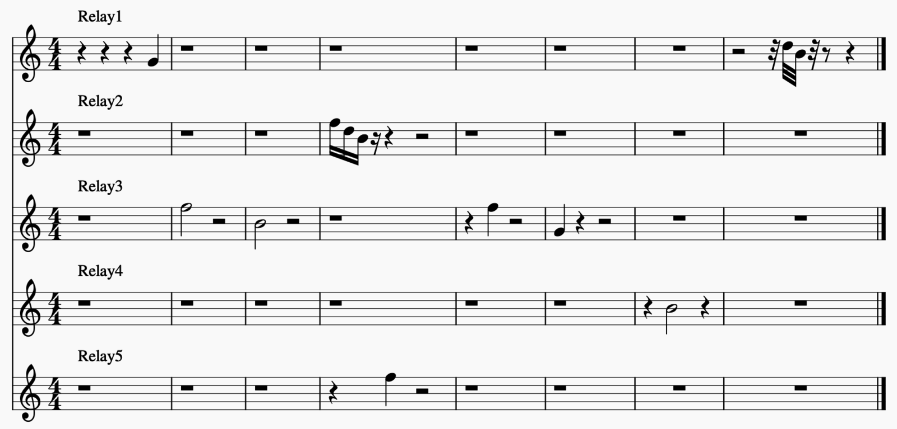
Figure 10. Notated example of Arrhythmia
DISCUSSION
A media archaeological “unpassioned listening” (as a non-hermeneutic analysis of the event) suggests the machine is the sole arbiter of representation and denies the relationship between transmitter and receiver, in this case the artefact and the audience. [28] The limitation of using such a material media archaeological approach is exposed when it comes to its creative application as an artistic method. For Ernst, of importance is the confluence of the artefact’s materialities in operation. For the audience it is the material entanglement of sound leaving one body and entering another that determines how it is experienced. As Jonathan Sterne notes, the perceptual quality of sound, as an explicit sonification of the vibrational or rhythmic event, is a “product of the human senses and not a thing in the world apart from humans. Sound is a little piece of the vibrating world” and “somewhat human-centered.” [29]
Garrett Stewart contends that an ‘evocalization’, the silent evocation of voice, occurs when we read. This is the vocalization that “proceeds to give voice” and encompasses the many organs of vocal production that Katherine Hayles describes as subvocalization. [30] [31] If the relay was conceived as a ‘surrogate body’ what happens when the text of A Million Random Digits with 100,000 Normal Deviates is read by an electro-mechanical object? [31] If the relay is a surrogate body, then Ernst’s inaudible vibrational or rhythmic events exist as a form of subvocalization, emerging when voiced by the relay. The transference of materiality from the printed page to a digital medium is Click::RAND#2’s explicit sonification of both a silent reading of the book’s text and of Ernst’s vibrational or rhythmic events without sound or voice. The algorithmic processes used in Click::RAND#2 allow the possibility of embodying the 0s and 1s as a method to expose the discrete time signalling and patterns of state transitions of a binary sequence in the real as a series of rhythmic clicks. [5]
Conclusion
Click::RAND#2 is the sonic articulation of a large set of true random numbers produced by RAND Corporation. Originally printed on Hollerith punch cards, the digit sets were then published in human readable book form before being published in digital format as data files. These data files have been creatively appropriated for compositional use in Click::RAND#2. From the machine rhythms of the punch card reader and the electromechanical computer to the prosodic rhythms of vocalizing the book of digits to the micro-temporal acts of repetition and regeneration in the storage and transmission of digital files, Click::RAND#2 re-presents the random digits as a series of compositions to explore the inherent rhythms present in binary encoded format. Using the relay as the sound producing object, the rhythmic patterning as a presence and absence of sound is manifested by the metallic clicking of the relays’ contacts. Not only do we listen to an articulation of the media in the present, but the work evokes a temporal connection with the past articulations of the data sets in their various material forms.
The work does not to seek to establish a media archaeological connection between present and past media constellations. Instead, the work forms an audiovisual relationship between two artefactual forms of media expressed through a series of binary sequences. By doing so, Click::RAND#2 bridges two distinct temporalities. In the immediate present the appropriation of a set of random digits, reduced to a primal level as 0s and 1s are expressed by operatively engaging a series of relays as an expression of themselves and of the inherent rhythms of binary sequences. As an evocation of the past Click::RAND#2 is an expression of the sounds of mid-20th century electro-mechanical relay-based computers; a time when those machines would have utilized sets of random digits to perform analytical and probabilistic calculations. As a form of media archaeological anamnesis4, the rhythmic chattering of the relays seeks to establish a point of connection and recollection of this past media moment. Using Henri Lefebvre’s rhythmanalysis as a framework for the embodied response to the aurality of Click::RAND#2 provides a context for the compositional realization and experience of the work. Rather than create a binary opposition of objective and subjective interpretations of non-human and human perspectives the artefact’s sound, both viewpoints have been incorporated and represented in Click::RAND#2. As such, both forms of embodiment, that of the object and the audience, can serve the rhythmanalyst as primal sources for the interpretation of knowledge.
Video Collateral
Eurhythmia
Polyrhythmia
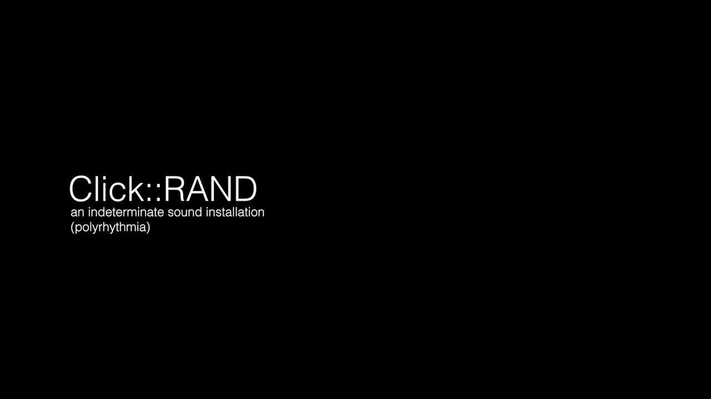
▶Arrhythmia
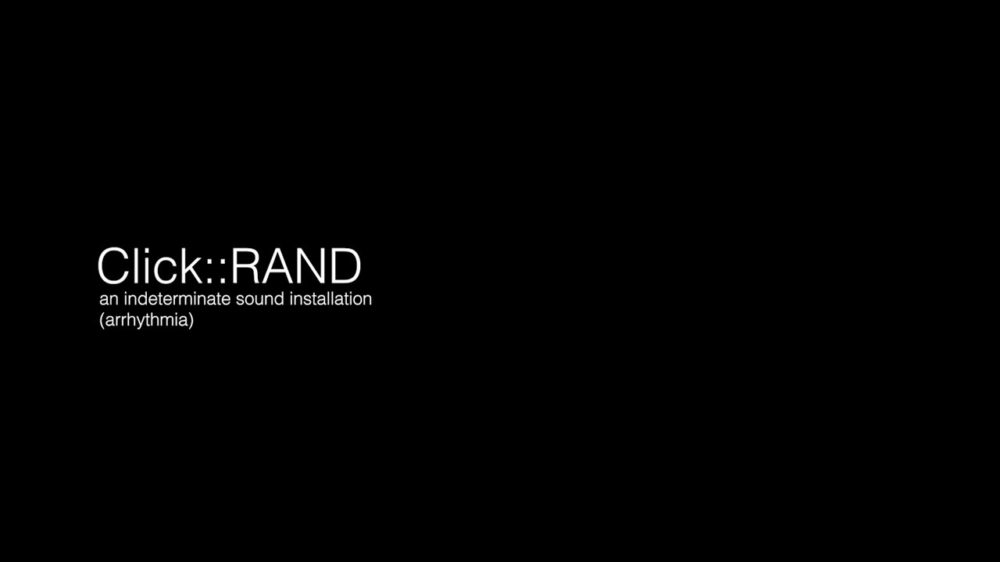
▶Footnotes
A form of algebraic notation operating only on 0 and 1 that defines a set of rules for logical operations on binary numbers. Described as Boolean algebra, it is the basis of all computer operations.
↩- ↩
Eurhythmia: https://vimeo.com/500220648
Polyrhythmia: https://vimeo.com/500220872
Arrhythmia: https://vimeo.com/500220993
↩Anamnesis can be loosely defined as recalling the past as a recollection or reminiscence. It has also been described as the rediscovery or recollection of knowledge that can occur during inquiry and learning.
↩
Citations
- ↩Markowsky, G., & School of Computing and Information Science, University of Maine. (2014). The Sad History of Random Bits. Journal of Cyber Security, 3(1), 1–24. https://doi.org/10.13052/jcsm2245-1439.311
- ↩Bennett, D. J. (1998). Randomness. Cambridge, Mass: Harvard University Press.
- ↩L’Ecuyer, P. (2017). History of uniform random number generation. In 2017 Winter Simulation Conference (WSC) (pp. 202–230). Las Vegas, NV: IEEE. https://doi.org/10.1109/WSC.2017.8247790
- ↩Terwijn, S. A. (2016). The Mathematical Foundations of Randomness. In K. Landsman & E. van Wolde (Eds.), The Challenge of Chance: A Multidisciplinary Approach from Science and the Humanities (1st ed. 2016, pp. 49–66). Cham: Springer International Publishing : Imprint: Springer. https://doi.org/10.1007/978-3-319-26300-7
- ↩Lacan, J. (1988). Psychoanalysis and cybernetics, or on the nature of language. In The Seminar of Jacques Lacan (Vol. 2, pp. 294–308). London ; New York: W.W. Norton & Company.
- ↩Dunham, P., Zareei, M. H., McKinnon, D., & Carnegie, D. (2020). Click::RAND. A Minimalist Sound Sculpture. In Proceedings of the International Conference on New Interfaces for Musical Expression (pp. 139–142). Birmingham, UK.
- ↩Ceruzzi, P. E. (1990). Relay Calculators. In Computing Before Computers (pp. 200–222). Ames, Iowa: Iowa State University Press.
- ↩Ceruzzi, P. E. (1981). The Early Computers of Konrad Zuse, 1935 to 1945. IEEE Annals of the History of Computing, 3(3), 241–262. https://doi.org/10.1109/mahc.1981.10034
- ↩Ware, W. H. (2008). RAND and the information evolution: a history in essays and vignettes. Santa Monica, CA: Rand Corp.
- ↩Brown, G. W. (1949, June). History of RAND’s Random Digits - Summary.
- ↩Parikka, J. (2011). Operative Media Archaeology: Wolfgang Ernst’s Materialist Media Diagrammatics. Theory, Culture & Society, 28(5), 52–74. https://doi.org/10.1177/0263276411411496
- ↩Ernst, W. (2016). Sonic Time Machines. Amsterdam: Amsterdam University Press.
- ↩Barthes, R. (1985). The Responsibility of Forms: Critical Essays on Music, Art, and Representation (English translation). New York: Hill and Wang.
- ↩Lefebvre, H. (2004). Rhythmanalysis: Space Time and Everyday Life (English Translation). London: Continuum.
- ↩Miyazaki, S. (2013). AlgoRHYTHMS Everywhere: A Heuristic Approach to Everyday Technologies. In J. H. Hoogstad & B. Stougaard Pedersen (Eds.), Off Beat: Pluralizing Rhythm (pp. 135–148). Brill \textbar Rodopi. https://doi.org/10.1163/9789401208871_010
- ↩Bachelard, G. (2000). The Dialectics of Duration (English translation). Manchester: Clinamen Press.
- ↩Molderings, H., & Brogden, J. (2010, May 31). Duchamp and the Aesthetics of Chance. Columbia University Press. https://doi.org/10.7312/mold14762
- ↩TRENKAMP, A. (1976). THE CONCEPT OF ‘ALEA’ IN BOULEZ’S ‘CONSTELLATION–MIROIR.’ Music and Letters, LVII(1), 1–10. https://doi.org/10.1093/ml/lvii.1.1
F. Leadon, “The Aleatoric Studio: Embracing Chance and Risk in First-Year Design,” WHERE DO YOU STAND, pp. 480–487
↩- ↩Luque, S. (2009). The Stochastic Synthesis of Iannis Xenakis. Leonardo Music Journal, 19, 77–84. https://doi.org/10.1162/lmj.2009.19.77
- ↩Pigott, J. (2017). Across Fields: Sound, art and technology from an electromechanical perspective. Organised Sound, 22(2), 276–285. https://doi.org/10.1017/s1355771817000188
J. Cage, “Indeterminacy,” in Silence: Lectures and Writings, Wesleyan University Press, 1961.
↩J. Pritchett, The Music of John Cage. Cambridge, U.K. ; Cambridge University Press, 1993.
↩- ↩Wright, M. P. (2011). Zimoun. EAR ROOM. Retrieved from https://earroom.wordpress.com/2011/01/01/zimoun/
- ↩Cage, J. (2010). Silence: Lectures and Writings. Connecticut: Wesleyan University Press.
- ↩Lyon, D. (2019). What is Rhythmanalysis? Bloomsbury Academic. https://doi.org/10.5040/9781350018310
- ↩Alhadeff-Jones, M. (2019). Beyond space and time—Conceiving the rhythmic configurations of adult education through Lefebvre’s rhythmanalysis. Zeitschrift Für Weiterbildungsforschung, 42(2), 165–181. https://doi.org/10.1007/s40955-019-0133-0
- ↩Ernst, W., & Parikka, J. (2013). Digital memory and the archive. Minneapolis, MN: University of Minnesota Press.
- ↩Sterne, J. (2003). The Audible Past. Durham: Duke University Press.
- ↩Stewart, G. (1990). Reading voices: literature and the phonotext. Berkeley: University of California Press.
- ↩Hayles, N. K. (1997). Voices out of Bodies, Bodies out of Voices. In Sound states: innovative poetics and acoustical technologies. The University of North Carolina Press.